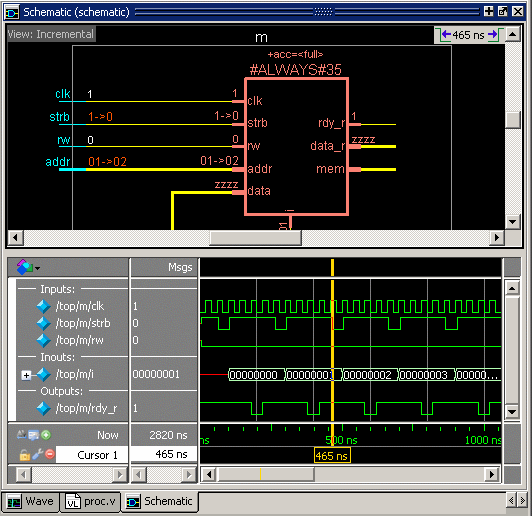

Another way of
exploring your design is to use the embedded wave viewer for the
Incremental view.
This viewer closely resembles, in appearance
and operation, the Wave window (see Waveform Analysis for more information).
Procedure
- To open
the wave viewer, use the menu selection when
the Incremental view is active, or simply click the Show
Wave toolbar button.
- When wave viewer is first
displayed, the visible zoom range is set to match that of the last
active Wave window, if one exists. Additionally, the wave viewer's moveable
cursor (Cursor 1) is automatically positioned to the location of
the active cursor in the last active Wave window.
- When you select an instance
or process in the schematic, all signals attached to that instance
or process are added to the wave viewer. In Figure 1, the #ALWAYS#35 process is selected
and the wave viewer displays 3 inputs, 1 output, and an inout bus.
See Tracing Events in the Incremental View for another example of using the
embedded wave viewer.
- With the embedded wave viewer
open in the Incremental view you can run the design for a period
of time, then use time cursors to investigate value changes. As
you place and move cursors in the wave viewer (see Measuring Time with Cursors in the Wave Window), the signal values update in
the schematic view (Figure 1).
- Notice that the title of the
Schematic window changes to reflect which portion of the window
is active. When the schematic is active, the title of the window
is “Schematic (schematic).” When the embedded wave view is active,
the title of the window is “Schematic (wave).” Menu and toolbar selections
will change depending on which portion of the window is active.
Figure 1. Wave Viewer Displays
Inputs and Outputs of Selected Process